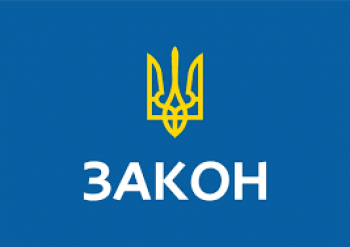

Закон про кримінальну відповідальність за колабораціонізм набув чинності
В Україні набув чинності Закон "Про внесення змін до деяких законодавчих актів (щодо встановлення кримінальної відповідальності за колабораційну діяльність)" (№2108-ІХ).
Документ опубліковано в офіційному виданні Верховної Ради "Голос України", передає Укрінформ.
Згідно з текстом закону,
публічне заперечення громадянином України здійснення збройної агресії проти держави, встановлення та утвердження тимчасової окупації частини території України або публічні заклики цим громадянином, зокрема, до підтримки рішень та/або дій держави-агресора, збройних формувань та/або окупаційної адміністрації держави-агресора, співпраці з державою-агресором, збройними формуваннями та/або окупаційною адміністрацією держави-агресора, невизнання поширення державного суверенітету України над тимчасово окупованими територіями карається позбавлення права обіймати певні посади або займатися певною діяльністю на строк від десяти до п‘ятнадцяти років.
За здійснення громадянином України пропаганди
в навчальних закладах, незалежно від типів і форм власності, з метою сприяння здійсненню збройної агресії проти Української держави, встановленню та утвердженню тимчасової окупації територій України, а також дії спрямовані на впровадження освітніх стандартів держави-агресора передбачається покарання у вигляді виправних робіт строком до 2 років або арешту до 6 місяців, або позбавленням волі до 3 років з позбавленням права обіймати певні посади чи займатися певною діяльністю від 10 до 15 років.
Передача матеріальних ресурсів незаконним збройним чи воєнізованим формуванням
створеним на тимчасово окупованій території, та/або збройним чи воєнізованим формуванням держави-агресора, та/або провадження господарської діяльності у взаємодії з державою-агресором,
незаконними органами влади, створеними на тимчасово окупованій території, у тому числі окупаційною адміністрацією держави-агресора,
карається штрафом до десяти тисяч неоподаткованих мінімумів громадян або позбавленням волі на строк від 3 до 5 років з позбавленням права обіймати певні посади чи займатися певною діяльністю строком від 10 до 15 років та з конфіскацією майна.
Водночас добровільне зайняття громадянином України посади
пов’язаної з виконанням організаційно-розпорядчих або адміністративно- господарських функцій, у незаконних органах влади, створених на тимчасово окупованій території, або добровільне обрання до таких органів, а також участь в організації та проведенні незаконних виборів та/або референдумів, або публічні заклики до проведення таких незаконних заходів карається позбавленням волі на строк від 5 до 10 років з позбавленням права обіймати певні посади чи займатися певною діяльністю строком від 10 до 15 років та з конфіскацією майна або без такої.
Організація та проведення заходів політичного характеру
та/або здійснення інформаційної діяльності у співпраці з державою-агресором та/або його окупаційною адміністрацією,
спрямованих на підтримку держави-агресора, її окупаційної адміністрації чи збройних формувань та/або уникнення нею відповідальності за збройну агресію проти України, за відсутності ознак державної зради,
а також активна участь у таких заходах карається позбавленням волі на строк від 10 до 12 років з позбавленням права обіймати певні посади чи займатися певною діяльністю строком від 10 до 15 років та з конфіскацією майна або без такої.
Добровільне зайняття громадянином України посади в незаконних судових або правоохоронних органах,
створених на тимчасово окупованій території, а також добровільна участь цього громадянина в незаконних збройних чи воєнізованих формуваннях, створених на тимчасово окупованій території, та/або в збройних формуваннях держави-агресора чи надання таким формуванням допомоги у веденні бойових дій проти ЗСУ та інших військових формувань, утворених відповідно до законів України, добровольчих формувань, що були утворені або самоорганізувалися для захисту незалежності, суверенітету та територіальної цілісності України карається позбавленням волі на строк від 12 до 15 років з позбавленням права обіймати певні посади чи займатися певною діяльністю строком від 10 до 15 років та з конфіскацією майна або без такої.
Вчинення особами дій, зазначених у попередніх трьох пунктах
або ухвалення рішень, які призвели до загибелі людей чи настання інших тяжких наслідків, карається позбавленням волі на строк від 15 років або довічним позбавленням волі з позбавленням права обіймати певні посади чи займатися певною діяльністю строком від 10 до 15 років та з конфіскацією майна або без такої.
Як повідомляв Укрінформ
Верховна Рада ухвалила Закон "Про внесення змін до деяких законодавчих актів (щодо встановлення кримінальної відповідальності за колабораційну діяльність)" 3 березня. Голова ВР невідкладно його підписав та направив на підпис Президентові.
--------------------------------------
--------------------------------------